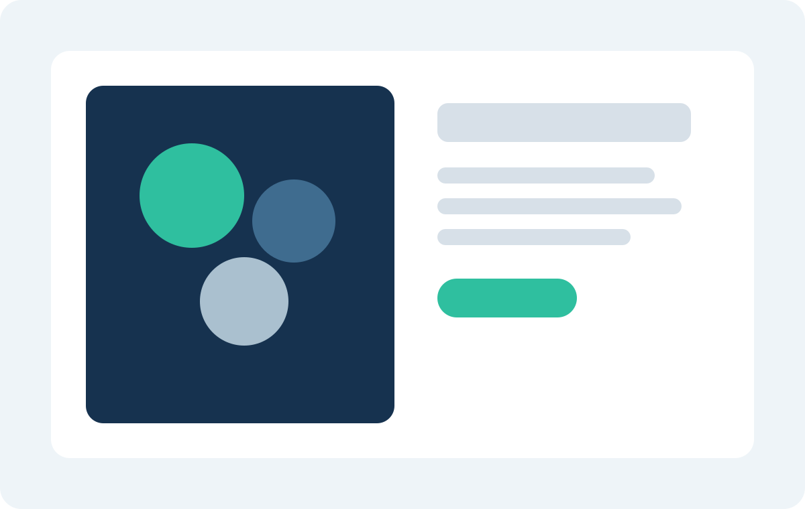

Company
相談しやすさと、現場に踏み込める支援体制を両立しています
経営企画、管理部門、現場責任者のどの立場からでも相談しやすいよう、課題整理から初回提案まで具体的に進めます。改善テーマが固まっていなくても問題ありません。

Company Profile
会社概要
- 会社名
- アクシス業務デザイン株式会社
- 設立
- 2014年4月
- 所在地
- 東京都中央区日本橋兜町8-1 FinGATE TERRACE 5F
- 事業内容
- 業務改善支援、BPO設計、DX定着支援、運用設計コンサルティング
- 支援体制
- 業務コンサルタント、運用設計担当、定着支援担当の混成チームで対応
- 情報管理
- 情報管理規程整備、ISMS準拠運用、外部専門家連携体制あり
FAQ
よくある質問
まだ課題整理ができていない段階でも相談できますか。
可能です。初回相談では、現状の困りごとを整理しながら、対象にすべき業務や優先順位の考え方をご案内します。
システム導入が前提でなくても依頼できますか。
はい。業務設計や手順整理のみの支援も行っています。必要に応じて、既存ツール活用や最小限の仕組み化から進めます。
地方拠点や複数拠点をまたぐ支援にも対応していますか。
対応しています。オンラインヒアリングと現地訪問を組み合わせ、拠点差が大きい業務の標準化を進めます。
問い合わせ後、どのくらいで提案を受けられますか。
通常は初回相談から5営業日以内に、支援の進め方と概算スケジュールをご案内しています。
お問い合わせの流れ
-
1
お問い合わせ
フォームまたはお電話でご連絡ください。
-
2
内容確認
1営業日以内を目安に担当者よりご連絡します。
-
3
初回ヒアリング
対象業務や課題背景を確認し、論点を整理します。
Contact